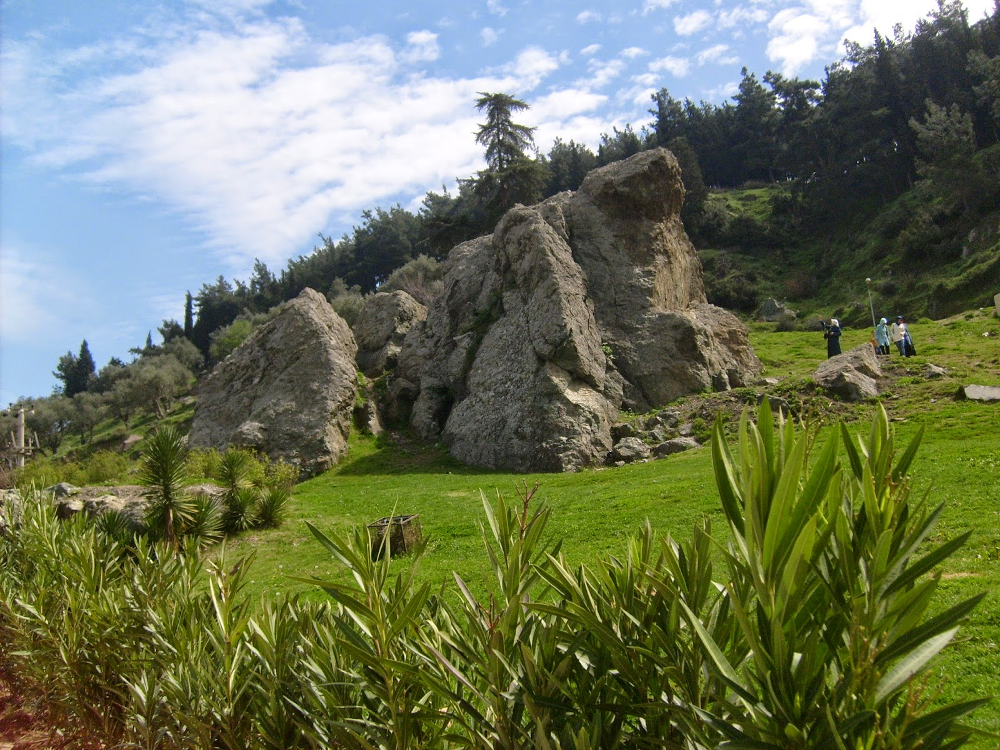

Niobe
Spil Dağı eteklerinde, Çaybaşı Mahallesi'nde görülen Ağlayan Kaya, efsanesiyle uluslararası üne sahip olmuş bir kayadır. Efsaneye göre; Spil Dağı yakınlarında yaşayan ve Tantalos'un kızı olan Niobe'nin 12 çocuğu olmuştur. Bununla sürekli övünen Niobe, Zeus'un eşi olan Leto'nun iki çocuğu olduğu için her fırsatta kendisinin çok çocuğu olduğunu dile getirmiştir. Bu durum Tanrıça Leto'yu çok sinirlendirir ve çocukları olan Artemis ile Apollon'u çağırıp Niobe'ye ceza vermelerini söyler. Apollon ve Artemis oklarıyla Niobe'nin tüm çocuklarını öldürür. Niobe çocuklarının ölümünden sonra günlerce ağlar. Tanrı Zeus, Niobe'ye acır ve onu Spil Dağı'nın eteklerinde taşa çevirir.
